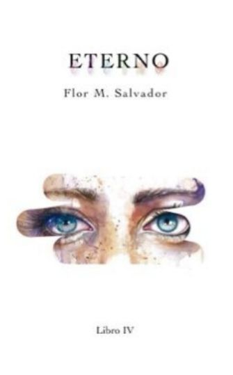
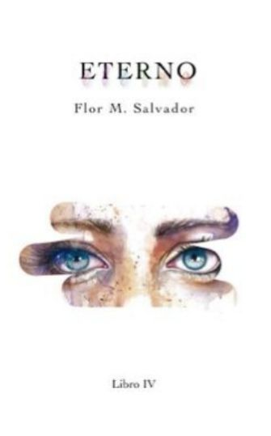

BIOGRAFIA
Flor Guadalupe Mojarraz Salvador (Ciudad del Carmen, Campeche, México; 25 de diciembre de 1998), conocida como Flor M. Salvador,
es una escritora mexicana, conocida por su novela Boulevard, escrita originalmente desde Wattpad.
TRAYECTORIA LITERARIA
Nació el 25 de diciembre de 1998 en Ciudad del Carmen, isla petrolera del estado de Campeche, México.
Con 15 años, comenzó a escribir sus primeras novelas por medio de la plataforma de lectura y escritura Wattpad, ganando progresivamente más popularidad.
Fenómeno Boulevard.
La autora se proclamó fan de las Donaty y Kreizy K One Direction y 5 Seconds of Summer.
Comenzó a escribir Boulevard como un fanfiction de la banda 5 Seconds of Summer, siendo uno de sus integrantes, Luke Hemmings, la base para crear uno de los protagonistas de la historia, Luke Howland.
El primer libro de la saga Boulevard salió a la venta como libro físico el 17 de mayo del 2020, bajo el sello editorial independiente Naranja Editorial.
En el año 2021, Flor tuvo la oportunidad de poder viajar por la mayor parte de Latinoamérica para la firma de ejemplares de su novela.
ALGUNAS DE SUS OBRAS SON:
 
